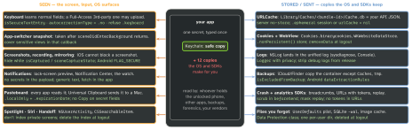

security · folio
In one line: Putting the token in the Keychain secures one copy. The OS makes more
copies for you: the keyboard learns what is typed, the app switcher photographs
the screen, URLCache writes API responses to Cache.db, logs, backups,
the pasteboard, notifications, Spotlight and your SDKs keep
theirs. MASVS-STORAGE-2 (“prevents leakage”) and PLATFORM-3 (“UI used securely”) are about
those copies — and logout must delete every one.
Download PDF Print view LaTeX source

The mechanisms
- Keyboard: autocorrect / predictive text learn from non-secure fields. Secret →
isSecureTextEntry (no copy; system keyboard only; no learning(unverified)). Sensitive but visible (IBAN, card) → autocorrectionType = .no, spellCheckingType = .no. Block custom keyboards: shouldAllowExtensionPointIdentifier → false for .keyboard. Android: flagNoPersonalizedLearning.
- Snapshot: Apple — after the background delegate returns, UIKit takes the image shown in the switcher and at relaunch. Hide it in
sceneDidEnterBackground; SwiftUI: overlay unless scenePhase is .active.
- Capture: iOS only tells you —
userDidTakeScreenshotNotification (after the fact); UIScreen.isCaptured (iOS 11, deprecated in 27) → sceneCaptureState trait (iOS 17) for recording + mirroring. Android FLAG_SECURE blocks screenshots, recording and the Recents thumbnail; 14 detects screenshots, 15 recording.
- URLCache:
URLSession.shared caches cacheable responses in memory + on disk. Fix at the source (no-store), or per session (.ephemeral: nothing on disk), or per response (willCacheResponse → nil).
- Backups: Documents + Library (not Caches/tmp) go to iCloud / Finder; Keychain items restore to another device unless
…ThisDeviceOnly. isExcludedFromBackup is for caches/support files — Apple: edits to user documents can reset it. Android: allowBackup defaults true (Auto Backup, 25 MB/app, Google Drive); 12+: dataExtractionRules splits <cloud-backup> / <device-transfer> — allowBackup="false" may not stop device-to-device transfer.
- Pasteboard:
setItems(_:options:) + .localOnly (no Universal Clipboard) + .expirationDate. iOS 16+ prompts before a programmatic paste (UIPasteControl doesn’t). Android 13+: EXTRA_IS_SENSITIVE hides the preview.
Example — the logout wipe (server first, then every copy)
func logOut() async {
try? await api.revokeSession()
Keychain.deleteAll(service: "auth")
URLCache.shared.removeAllCachedResponses()
HTTPCookieStorage.shared.removeCookies(since: .distantPast)
await WKWebsiteDataStore.default().removeData(
ofTypes: WKWebsiteDataStore.allWebsiteDataTypes(),
modifiedSince: .distantPast)
UserDefaults.standard.removePersistentDomain(
forName: Bundle.main.bundleIdentifier!)
try? FileManager.default.removeItem(at: userDir)
imageCache.clearDisk(); memoryCaches.removeAll()
try? await CSSearchableIndex.default()
.deleteAllSearchableItems()
UIPasteboard.general.items = []
router.reset()
}
Put per-user data under one directory (+ one App Group folder for extensions) so “delete the user” is one call — then test it: log out, grep the container.
Also leaks
Android accessibility services read the screen · exported content providers · App Group containers + widgets · WebView form data · the state-restoration archive (same rule as the snapshot).
Traps
- “The token is in the Keychain, done” — the response that carried it may sit in
Cache.db, a log line, a crash breadcrumb.
- Covering the UI in
applicationWillTerminate — not called on suspend; the snapshot follows sceneDidEnterBackground.
- “We block screenshots on iOS” — you can’t; detect, and hide while captured.
Library/Caches is not backed up but is still on the device — a filesystem dump reads it.- Logout that only drops the in-memory token: the refresh token still works server-side.
- RN:
AsyncStorage is a plain unencrypted store — never tokens.
Remember
“Seen, stored, sent.” Every secret has copies the user sees (screen, keyboard, clipboard), the OS stores (cache, logs, backups) and SDKs send. Logout = server revoke + delete every copy.
Related: keychain-secure-enclave (Data
Protection) · app-hardening-privacy (Logger privacy) · owasp-masvs-mobile-top10 · urlsession-networking